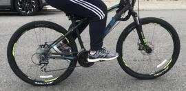
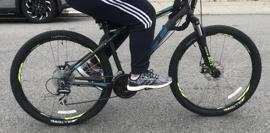

Who I am?
My name is Michael. I am a fourth-year transfer student at California Polytechnical State University in San Luis Obispo, CA. My major is City and Regional Planning and I minor in Landscape Architecture.
What is my favorite hobby? Why?
My favorite hobby is to ride my mountain bike to go to campus or SLO Downtown. I always want to go cycling because:
- Helps the environment by reducing pollution and maintaining good health.
- A good functional activity to take away some stress inside my head.
- Healthy, fun, and low-impact form of activity for everyone.
- Ride my bike to go another city.
What are the steps to learn riding a bike?
Before I talk about cycling instruction, we need to wear essential safety equipment for your body and bike.
- Wear a helmet that protects your head to reduce the risk of a severe injury. It also prevents many unintentional bike death or fatal bike accidents.
- Wear a pair of gloves that provides extra protection in your hands during a crash. It also enhanced grip and control on bike handlebars.
- Have a taillight and headlight install a bike because provide some light to ensure are visible to the road user.
- Choose the right bike frame from the outset to be more comfortable and fun to ride.
- Find a flat surface or open space such as a park trail or quiet road to practice braking and balancing for a more extended period.
- Try to practice using the hand brakes to feel how much pressure it takes to reduce the speed or stop while off your bike.
- Sit on seat with one foot on the ground and the other on the pedal like 1- 2 o'clock position.
- press down pressure on the pedal in the high place that gives the bike its forward momentum
Any additinal information and tip for cycling?
There is some additional information and tip for cycling. There are three craigslist cycle:
- Road Bike: build a lightweight frame, wheel, components for efficiently riding on the road.
- Mountain bikes: build for off-road cycling in rough terrain, trail riding, downhill in a mountain.
- Hybrid bikes: blend characteristics from road bikes and mountain bikes.
*Tip for cycling:
- Try to look straight because it maintains a straight line and tends to have a balanced path.
- Getting out of comfort zone and being playful on your bike, you can become a better rider and have more fun.


 
